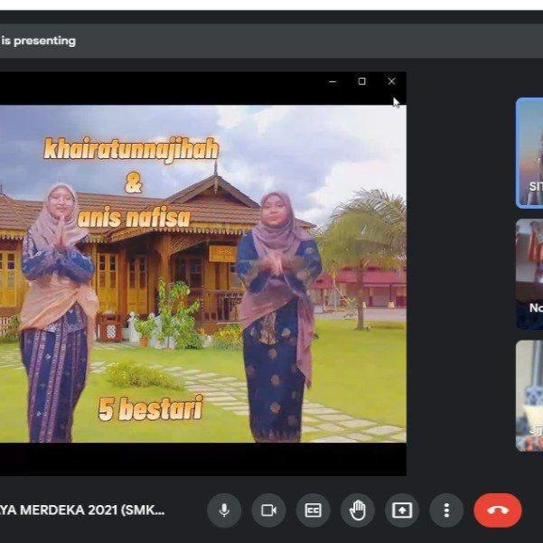
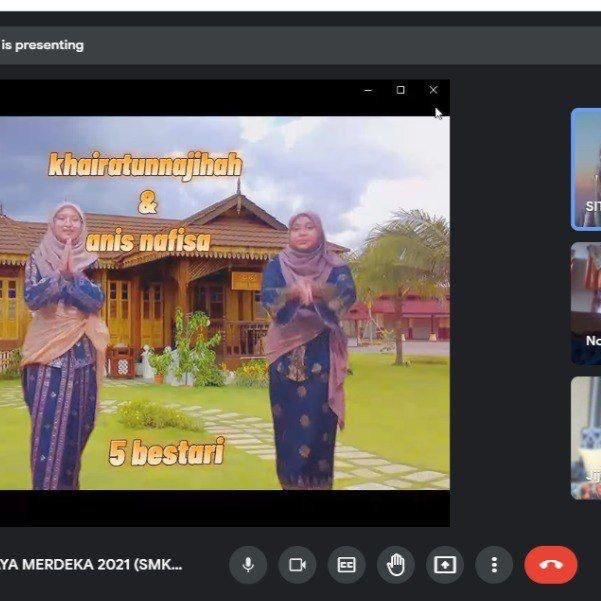

Experience Timeline
Kadet Bomba Competition
Weeks of rigorous training have led to this moment, where skill, teamwork and courage will be tested. We have got 2 gold and 1 bronze in the tie and knot event, aspect challenge and foot march.
February 2020Online Camping
It is a new challenge for all students involved. With the blessing of effort and sustenance, I have become the overall winner in this online camp. But, it is not just about winning, it is about embracing new ways of doing things and stepping out of my comfort zone.
August 2021 

Stall Worker Selling Takoyaki
Working part-time at a takoyaki stall while waiting for SPM results and diploma offers is an excellent way to use my time productively. This part-time job is one of the most practical and meaningful ways for me to gain real-world experience while waiting for the next stage of life.
June - September 2022Perkom - Rempuh Halangan
Participating in Rempuh Halangan is an exciting and valuable experience that improves physical and mental skills. This event provided the perfect opportunity to challenge myself, develop teamwork, and build mental resilience.
November 2022
Annual Grand Meeting JASA Club
As a member of the JASA Annual General Meeting Protocol Committee, I was able to ensure that the program ran smoothly without any defects. This experience gave me valuable insights to organize formal events more regularly in the future.
November 2023Team Building JASA Club at Gunung Ledang
A productive way to build stronger relationships, improve leadership skills and engage in teamwork while enjoying the beauty of Mount Ledang that provides the perfect balance of work and relaxation.
December 2023Internship at PPK Sri Medan
In addition to being able to improve practical skills, build professional networks, and contribute to agricultural and rural development projects. I also got experience working with various people, from farmers to industry professionals such as LPP and PUSPANITA.
July - September 2024